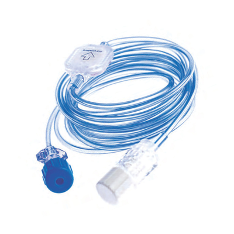

Linie 15 cm
Przykładowe linie krótkie, w tym warianty ze SmartSite™ oraz z zaciskiem. Mogą być stosowane również jako linie pompy strzykawkowej.
Nowy obszar oferty DH Medical obejmujący rozwiązania Impromediform dla terapii dożylnej, w tym linie infuzyjne, filtry, zestawy żywienia pozajelitowego oraz rozwiązania projektowane indywidualnie.
Szczegółowa konfiguracja i dobór produktu odbywa się po kontakcie z naszym zespołem.

Oferta ma charakter informacyjny — pełna specyfikacja, dostępność oraz konfiguracja zestawów są przygotowywane indywidualnie po kontakcie.
Krótkie i długie linie do zastosowań w terapii dożylnej oraz z pompami strzykawkowymi.
Rozwiązania z filtrami 0,2 µm oraz 1,2 µm, w tym warianty samowentylujące.
Wybrane warianty z rurką chronioną przed światłem dla określonych zastosowań klinicznych.
Elementy takie jak Luer lock, zaciski, zastawki zwrotne oraz zawory bezigłowe.
Poniżej prezentujemy przykładowe grupy produktów. Pełny dobór wariantu zależy od procedury, zastosowania oraz potrzeb placówki.
Przykładowe linie krótkie, w tym warianty ze SmartSite™ oraz z zaciskiem. Mogą być stosowane również jako linie pompy strzykawkowej.
Rozwiązania o długości 150 cm, w tym linie lekowe chronione przed światłem oraz warianty z filtrem.
Filtry infuzyjne, mikrofiltry oraz filtry bakteryjne do wybranych zastosowań terapeutycznych.
Linie filtracyjne poliuretanowe w wariantach kolorystycznych, m.in. czerwonym, zielonym i niebieskim.
Linie 2-drożne i 4-drożne z rozwiązaniami typu NeutraClear® przeznaczone do bezpiecznego dostępu infuzyjnego bez użycia igieł.
Zestawy przeznaczone do specjalistycznych zastosowań, w tym warianty żywienia pozajelitowego oraz uniwersalne zestawy infuzyjne.
Dla placówek i zespołów potrzebujących indywidualnej konfiguracji możliwe jest przygotowanie zestawu według określonych parametrów: długości, materiału, złączy, koloru rurki i zastosowania.